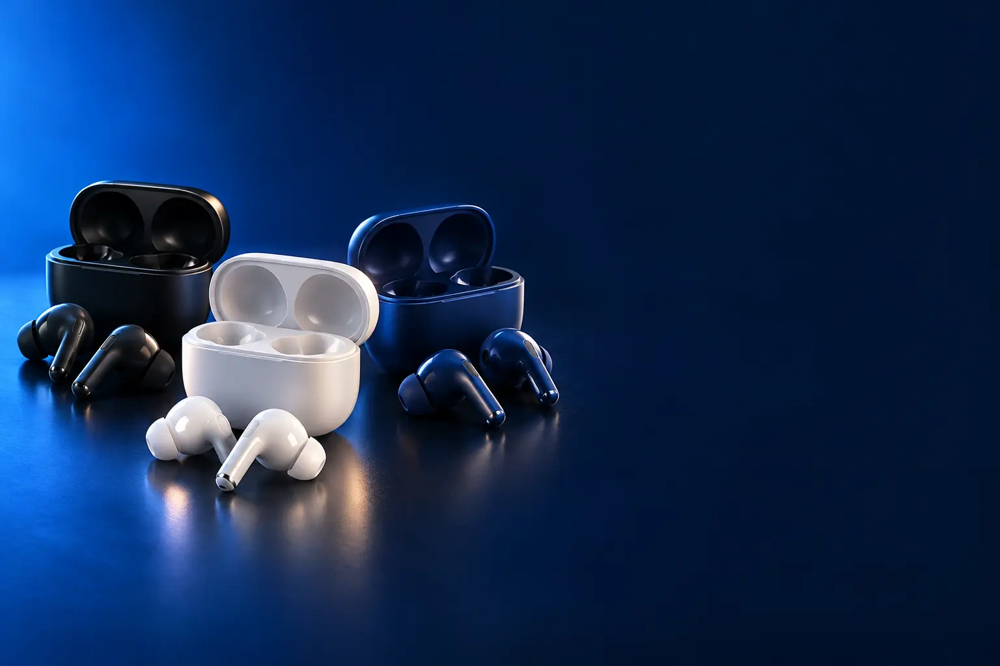

DIA A DIA
Melhor fone Bluetooth custo-benefício para o dia a dia
Música, podcast e chamadas no ônibus, no trabalho e em casa.

Melhor custo-benefício para o dia a diasoundcore P20i
CURADORIA TECHAPROVADO · 2026
Fone sem fio vai do básico para o ônibus ao que abafa o avião e ao que aguenta maratona. Separamos 16 modelos em 3 perfis e dizemos para quem cada um vale a pena.

NOSSA LEITURA
No dia a dia, conforto e bateria bastam. Em transporte barulhento, o cancelamento de ruído faz falta. Para treinar, o fone precisa ficar firme e, na rua, deixar ouvir o trânsito.
COMECE POR AQUI
DIA A DIA
Música, podcast e chamadas no ônibus, no trabalho e em casa.
CANCELAMENTO DE RUÍDO
Abafa o barulho do ônibus, do avião e do escritório.

ESPORTE E CORRIDA
Fica firme na orelha, aguenta suor e deixa ouvir a rua.

A FICHA, TRADUZIDA
01 - ANC
ANC (cancelamento ativo de ruído) usa microfones para ouvir o barulho de fora e criar um som contrário que o anula. Funciona melhor em ruído constante, como motor de ônibus, avião e ar-condicionado.
Para ônibus, metrô e escritório aberto, um ANC de entrada já ajuda muito. ANC adaptativo ajusta a força sozinho conforme o ambiente.
O ANC não apaga vozes e barulhos repentinos por completo. E consome bateria: com ele ligado, a autonomia cai.
02 - BATERIA
A ficha costuma mostrar dois números: quanto o fone toca numa carga e quanto toca somando as recargas do estojo. Ex.: 8 h no fone, 32 h com o estojo.
Para o dia a dia, 5 horas por carga bastam, porque o estojo recarrega nos intervalos. Para viagens longas, prefira 8 horas ou mais.
Quando o anúncio dá um número sem dizer se o ANC estava ligado, considere que foi com ele desligado.
03 - FORMATO
O intra-auricular entra no ouvido com ponteira de silicone: isola melhor e tem mais grave. O aberto fica sobre a orelha. A condução óssea transmite o som pelos ossos do rosto.
Para correr na rua, aberto e condução óssea são mais seguros, porque você ouve carros e pessoas. Para academia e transporte, o intra isola melhor.
Conforto é pessoal: se a ponteira incomoda, troque o tamanho (vem mais de um na caixa) ou prefira um modelo aberto.
04 - CODEC E APP
Codec é a forma como o som viaja do celular ao fone. O SBC e o AAC são o básico; LDAC e Hi-Res transmitem mais detalhes, mas só em celulares Android compatíveis.
O aplicativo da marca permite mudar a equalização (mais grave, mais voz), ajustar o ANC e atualizar o fone. Vale instalar.
Para ouvir música em streaming comum, a diferença entre codecs é pequena. Ela aparece em música de alta resolução e fones melhores.
05 - MICROFONE
Mais microfones e algoritmos de IA ajudam o fone a separar sua voz do barulho em volta. Fichas com 4 ou 6 microfones costumam render chamadas mais limpas.
Para quem faz muitas reuniões pelo fone, procure redução de ruído em chamadas e proteção contra vento.
Mesmo fones bons têm microfone pior que o do celular em lugares muito barulhentos. Em reuniões importantes, prefira lugar silencioso.
06 - RESISTÊNCIA
O código IP diz a proteção: IPX4 aguenta respingos e suor; IPX5 e IP55, jatos de água; IP68 aguenta mergulho.
Para treinar, IPX4 já basta. Para nadar, só fones IP68 feitos para isso, como o OpenSwim Pro.
O estojo quase nunca é resistente à água: seque o fone antes de guardar.
A CURADORIA EM DETALHE
16 modelos da pesquisa
PERFIL · 4 MODELOS, DA ENTRADA AO TOP DE LINHA
Para o dia a dia, o que mais pesa é conforto, bateria e microfone para chamadas. Estes fones não têm cancelamento de ruído ativo, por isso custam menos, e entregam o básico muito bem.

DIA A DIA · ENTRADA 1 de 4
Bluetooth 5.4 · até 36 h com estojo · redução de ruído em chamadas
Ver preço na AmazonPOR DENTRO DA ESCOLHA
Drivers de 10 mm, Bluetooth 5.4, até 7,5 horas no fone e 36 horas com o estojo, redução de ruído por IA nas chamadas e carga rápida USB-C.
Marca conhecida e bateria boa para o preço.
| ANC | Não |
|---|---|
| Bateria | 7,5 h (36 h com estojo) |
| Bluetooth | 5.4 |
Fonte: ficha e descrição do anúncio, conferidas em 02/11/2026. Dados informados pelo fabricante.
DIA A DIA · CUSTO-BENEFÍCIO 2 de 4
Melhor custo-benefício para o dia a dia
Graves BassUp · app com 22 equalizações · 30 h
Ver preço na AmazonPOR DENTRO DA ESCOLHA
Drivers de 10 mm com graves BassUp, app soundcore com 22 equalizações, 30 horas de bateria com o estojo, estojo compacto com cordão e 2 microfones com IA para chamadas.
Drivers de 10 mm com graves BassUp e um app com 22 equalizações deixam o som do seu jeito. As 30 horas com o estojo dão para a semana, e o estojo com cordão vai pendurado na mochila. Não tem cancelamento de ruído.
| ANC | Não |
|---|---|
| Bateria | 30 h com estojo |
| App | 22 equalizações |
Fonte: ficha e descrição do anúncio, conferidas em 02/11/2026. Dados informados pelo fabricante.

POR DENTRO DA ESCOLHA
Som JBL Deep Bass, controle por toque, resistência IP54 a poeira e respingos e bateria de até 32 horas (8 h no fone e 24 h no estojo).
O formato semiaberto incomoda menos quem não gosta de ponteira de silicone.
| ANC | Não |
|---|---|
| Bateria | 8 h (32 h com estojo) |
| Resistência | IP54 |
Fonte: ficha e descrição do anúncio, conferidas em 02/11/2026. Dados informados pelo fabricante.

DIA A DIA · TOP DE LINHA 4 de 4
Top de linha para o dia a dia
Chip H2 · áudio espacial · Siri
Ver preço na AmazonPOR DENTRO DA ESCOLHA
Novo design para conforto o dia todo, chip H2, áudio espacial personalizado com rastreamento da cabeça, isolamento de voz nas chamadas e até 30 horas com o estojo.
Para quem está no ecossistema Apple, a integração vale o preço. Fora dele, o P20i entrega mais por menos.
| ANC | Não (há versão com ANC) |
|---|---|
| Bateria | 5 h (30 h com estojo) |
| Chip | Apple H2 |
Fonte: ficha e descrição do anúncio, conferidas em 02/11/2026. Dados informados pelo fabricante.
PERFIL · 6 MODELOS, DA ENTRADA AO TOP DE LINHA
O cancelamento de ruído ativo (ANC) usa microfones para captar o barulho de fora e gerar um som contrário que o abafa. Faz muita diferença em transporte público, avião e escritório aberto.
ANTI-RUÍDO · CUSTO-BENEFÍCIO 1 de 6
Melhor custo-benefício com cancelamento de ruído
ANC até 42 dB · estojo vira suporte de celular · 45 h
Ver preço na AmazonPOR DENTRO DA ESCOLHA
Cancelamento de ruído que reduz até 42 dB, modo transparência, drivers de 10 mm com BassUp, até 45 horas com o estojo (ANC desligado) e estojo que vira suporte para o celular.
Reduz até 42 dB de ruído e tem modo transparência para ouvir o entorno quando precisa. Com o estojo, chega a 45 horas com o ANC desligado, e o próprio estojo vira suporte para ver vídeos no celular, na mesa ou no transporte.
| ANC | Até 42 dB |
|---|---|
| Bateria | Até 45 h com estojo |
| Extras | Modo transparência |
Fonte: ficha e descrição do anúncio, conferidas em 02/11/2026. Dados informados pelo fabricante.

ANTI-RUÍDO · ALTERNATIVA 2 de 6
Outro caminho: para celular Samsung
ANC · intérprete inteligente · troca automática
Ver preço na AmazonPOR DENTRO DA ESCOLHA
Fone da Samsung com cancelamento de ruído ativo, chamadas limpas, intérprete inteligente (tradução com o Galaxy AI) e troca automática entre aparelhos Samsung.
Custa como o P30i e troca o foco: integração com o Galaxy em vez de bateria máxima.
| ANC | Sim |
|---|---|
| Integração | Galaxy AI, troca automática |
Fonte: ficha e descrição do anúncio, conferidas em 02/11/2026. Dados informados pelo fabricante.

ANTI-RUÍDO · INTERMEDIÁRIO 3 de 6
ANC adaptativo · 60 h · 6 microfones
Ver preço na AmazonPOR DENTRO DA ESCOLHA
ANC híbrido adaptativo, 60 horas com o estojo mesmo com ANC ligado, drivers de 11 mm com BassUp, 6 microfones com IA e estojo-suporte para celular.
O degrau sobre o P30i é o ANC adaptativo e a bateria de 60 horas com ANC ligado.
| ANC | Híbrido adaptativo |
|---|---|
| Bateria | 60 h com estojo (ANC ligado) |
| Microfones | 6 |
Fonte: ficha e descrição do anúncio, conferidas em 02/11/2026. Dados informados pelo fabricante.

ANTI-RUÍDO · AVANÇADO 4 de 6
ANC 3.0 · Dolby Audio · LDAC e Hi-Res
Ver preço na AmazonPOR DENTRO DA ESCOLHA
ANC 3.0 adaptativo que se ajusta a cada 0,3 segundo e reduz vozes com o dobro de força, áudio Dolby, LDAC e Hi-Res para som de alta qualidade, e 6 microfones com IA resistentes ao vento.
É o salto de qualidade de som da linha: LDAC e Hi-Res para quem ouve música com atenção.
| ANC | 3.0 adaptativo |
|---|---|
| Som | Dolby, LDAC, Hi-Res |
| Microfones | 6, antivento |
Fonte: ficha e descrição do anúncio, conferidas em 02/11/2026. Dados informados pelo fabricante.

ANTI-RUÍDO · AVANÇADO 5 de 6
Estojo com tela de 1,45" · ANC · 48 h
Ver preço na AmazonPOR DENTRO DA ESCOLHA
Estojo com tela sensível ao toque de 1,45" que ajusta volume e equalização e atende chamadas sem pegar o celular, cancelamento de ruído ajustável, 6 microfones e até 48 horas de bateria com o estojo.
A tela no estojo é o diferencial: controle completo sem tirar o celular do bolso.
| ANC | Ajustável |
|---|---|
| Estojo | Tela touch de 1,45" |
| Bateria | 12 h (48 h com estojo) |
Fonte: ficha e descrição do anúncio, conferidas em 02/11/2026. Dados informados pelo fabricante.

ANTI-RUÍDO · TOP DE LINHA 6 de 6
Top de linha com cancelamento de ruído
ANC 2× mais forte · frequência cardíaca · tradução ao vivo
Ver preço na AmazonPOR DENTRO DA ESCOLHA
Cancelamento de ruído que remove até 2 vezes mais ruído que a geração anterior, segundo a Apple, áudio tridimensional, medição de frequência cardíaca nos treinos e tradução ao vivo com Apple Intelligence. Até 8 horas por carga com ANC.
Para usuários de iPhone, é o fone mais completo. Em Android, o Liberty 5 entrega mais por menos.
| ANC | 2× a geração anterior |
|---|---|
| Saúde | Frequência cardíaca |
| Bateria | Até 8 h com ANC |
Fonte: ficha e descrição do anúncio, conferidas em 02/11/2026. Dados informados pelo fabricante.
PERFIL · 6 MODELOS, DA ENTRADA AO TOP DE LINHA
Para correr e treinar, o fone precisa ficar firme e resistir ao suor. Os modelos abertos e de condução óssea deixam o ouvido livre para ouvir carros e pessoas, o que é mais seguro na rua.
ESPORTE · CUSTO-BENEFÍCIO 1 de 6
Melhor custo-benefício para esporte
Aberto · 4 posições de ajuste · 36 h
Ver preço na AmazonPOR DENTRO DA ESCOLHA
Fone aberto (open-ear) que fica sobre a orelha, com gancho ajustável em 4 posições, drivers de 16 mm, 4 microfones com IA e até 36 horas de bateria.
O formato aberto é o mais seguro para treinar na rua.
| Formato | Aberto, com gancho |
|---|---|
| Bateria | Até 36 h |
| Driver | 16 mm |
Fonte: ficha e descrição do anúncio, conferidas em 02/11/2026. Dados informados pelo fabricante.

ESPORTE · INTERMEDIÁRIO 2 de 6
Ganchos ajustáveis · ANC · SweatGuard · 48 h
Ver preço na AmazonPOR DENTRO DA ESCOLHA
Fone intra com ganchos que esticam e giram, cancelamento de ruído ativo, proteção SweatGuard contra suor e até 48 horas de reprodução.
É a escolha para treino em lugar fechado: firme, resistente ao suor e com ANC.
| Formato | Intra com ganchos |
|---|---|
| ANC | Sim |
| Bateria | Até 48 h |
| Proteção | SweatGuard |
Fonte: ficha e descrição do anúncio, conferidas em 02/11/2026. Dados informados pelo fabricante.

ESPORTE · ALTERNATIVA 3 de 6
Outro caminho: condução óssea
Condução óssea · multiponto · USB-C
Ver preço na AmazonPOR DENTRO DA ESCOLHA
Fone de condução óssea: o som chega pelas maçãs do rosto, sem tampar o ouvido. Tem microfone, conexão multiponto com dois aparelhos e carga USB-C.
A porta de entrada da Shokz, marca que popularizou a condução óssea para corrida.
| Formato | Condução óssea |
|---|---|
| Conexão | Multiponto |
| Carga | USB-C |
Fonte: ficha e descrição do anúncio, conferidas em 02/11/2026. Dados informados pelo fabricante.

POR DENTRO DA ESCOLHA
Condução óssea com som premium, moldura de titânio leve e envolvente que fica estável no treino, resistência ao suor e 10 horas de música e chamadas.
O degrau sobre o OpenMove é o som mais encorpado e a armação de titânio.
| Formato | Condução óssea |
|---|---|
| Armação | Titânio |
| Bateria | 10 h |
Fonte: ficha e descrição do anúncio, conferidas em 02/11/2026. Dados informados pelo fabricante.

ESPORTE · TOP DE LINHA 5 de 6
Top de linha para esporte
Drivers duplos · 12 h · microfones antivento
Ver preço na AmazonPOR DENTRO DA ESCOLHA
O topo de linha da Shokz, com drivers duplos (condução óssea e ar) para graves mais fortes, 12 horas de bateria com carga rápida USB-C, ganchos ergonômicos e microfones antivento.
Os drivers duplos resolvem o ponto fraco da condução óssea: o grave.
| Formato | Condução óssea + ar |
|---|---|
| Bateria | 12 h |
| Microfones | Antivento |
Fonte: ficha e descrição do anúncio, conferidas em 02/11/2026. Dados informados pelo fabricante.

ESPORTE · ALTERNATIVA 6 de 6
Outro caminho: para nadar
IP68 · Bluetooth e MP3 · botões físicos
Ver preço na AmazonPOR DENTRO DA ESCOLHA
Condução óssea à prova d'água IP68, com modo duplo: Bluetooth fora da água e MP3 com memória própria na piscina, onde o Bluetooth não alcança. Botões físicos para usar com a mão molhada.
É o único da lista feito para nadar. Para quem não nada, o OpenRun Pro 2 é melhor.
| Formato | Condução óssea |
|---|---|
| Proteção | IP68 |
| Modos | Bluetooth e MP3 |
Fonte: ficha e descrição do anúncio, conferidas em 02/11/2026. Dados informados pelo fabricante.
Nenhum modelo encontrado. Tente outro termo ou volte para Todos.
LADO A LADO
| Modelo | Perfil | Posição | ANC | Destaque |
|---|---|---|---|---|
| Xiaomi Redmi Buds 6 Play | Dia a dia | Entrada | Não | Bluetooth 5.4 · até 36 h com estojo · redução de ruído em chamadas |
| soundcore P20i | Dia a dia | Custo-benefício | Não | Graves BassUp · app com 22 equalizações · 30 h |
| JBL Wave Flex | Dia a dia | Intermediário | Não | Som JBL Deep Bass · IP54 · 32 h |
| Apple AirPods 4 | Dia a dia | Top de linha | Não (há versão com ANC) | Chip H2 · áudio espacial · Siri |
| soundcore P30i | Anti-ruído | Custo-benefício | Até 42 dB | ANC até 42 dB · estojo vira suporte de celular · 45 h |
| Samsung Galaxy Buds Core | Anti-ruído | Alternativa | Sim | ANC · intérprete inteligente · troca automática |
| soundcore P40i | Anti-ruído | Intermediário | Híbrido adaptativo | ANC adaptativo · 60 h · 6 microfones |
| soundcore Liberty 5 | Anti-ruído | Avançado | 3.0 adaptativo | ANC 3.0 · Dolby Audio · LDAC e Hi-Res |
| JBL Live Beam 3 | Anti-ruído | Avançado | Ajustável | Estojo com tela de 1,45" · ANC · 48 h |
| Apple AirPods Pro 3 | Anti-ruído | Top de linha | 2× a geração anterior | ANC 2× mais forte · frequência cardíaca · tradução ao vivo |
| soundcore V20i | Esporte | Custo-benefício | Até 36 h | Aberto · 4 posições de ajuste · 36 h |
| soundcore Sport X20 | Esporte | Intermediário | Sim | Ganchos ajustáveis · ANC · SweatGuard · 48 h |
| Shokz OpenMove | Esporte | Alternativa | Condução óssea · multiponto · USB-C | |
| Shokz OpenRun Pro | Esporte | Avançado | 10 h | Condução óssea · titânio · 10 h |
| Shokz OpenRun Pro 2 | Esporte | Top de linha | 12 h | Drivers duplos · 12 h · microfones antivento |
| Shokz OpenSwim Pro | Esporte | Alternativa | IP68 · Bluetooth e MP3 · botões físicos |
CONSIDERAÇÕES FINAIS
Fones over-ear (de arco) estão na pesquisa de fone over-ear. Nesta lista ficam só os fones sem fio que vão no ouvido.
O soundcore P20i para o dia a dia e o soundcore P30i para quem quer cancelamento de ruído.
Se você usa o fone em transporte público, avião ou escritório barulhento, sim. Em casa, faz menos diferença.
Para a rua, um fone aberto ou de condução óssea, que deixa ouvir o trânsito. Para a academia, um intra com ganchos.
Funcionam como fone Bluetooth comum, mas perdem recursos como troca automática e ajustes pelo sistema.
Porque ele muda várias vezes por dia. O botão leva ao valor atualizado na loja.
TRANSPARÊNCIA EDITORIAL
Separamos os fones pelo uso principal e montamos uma escada de preço em cada perfil. Cada modelo precisa responder com clareza "para quem ele é o certo".
Em cada perfil há modelos em faixas de preço diferentes, e cada degrau precisa entregar algo que o anterior não entrega. Dois modelos com a mesma proposta não entram juntos.
Ficha e especificações foram conferidas nos anúncios das lojas em 02/11/2026.
Os links de compra desta página são de afiliado: se você comprar por eles, o TechAprovado pode ganhar uma comissão, sem custo adicional para você. Isso não muda a ordem nem a escolha dos produtos.
📲 GUIAS E DICAS NO SEU FEED
Dicas práticas antes de comprar, em carrosséis e vídeos curtos, sempre com link para o guia completo.